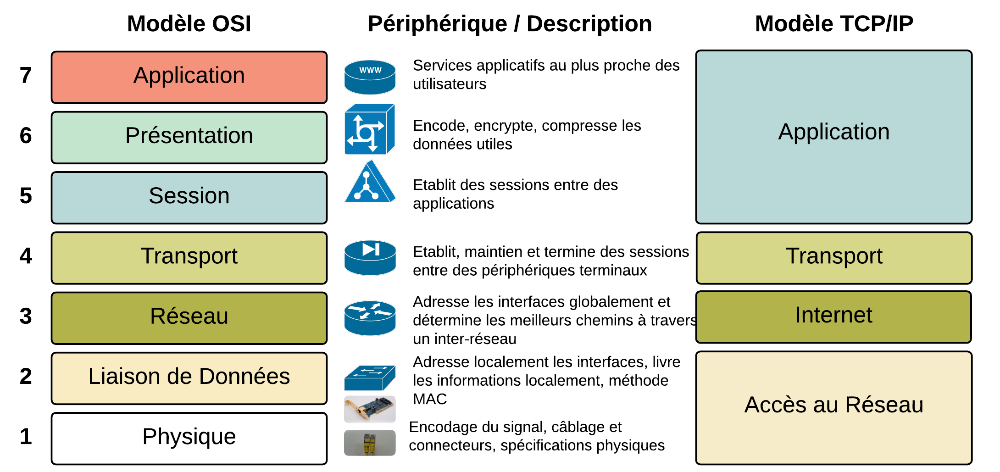
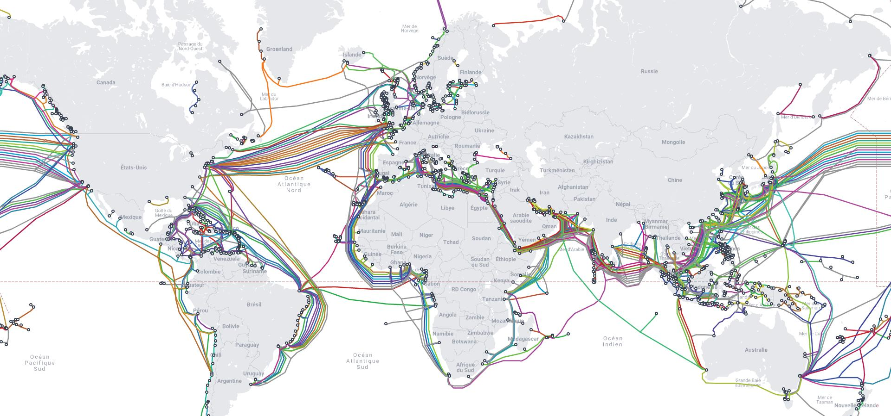

Cours Réseau – 12 Septembre 2025
Hébergement et applications
- Déployer des applications sur des serveurs
- Héberger la base de données
- Comprendre le fonctionnement d’un réseau
Focus : Système d’exploitation serveur
À 90% Linux. Les hébergeurs ne mettent pas d’interfaces graphiques sur leurs serveurs, donc tout se fait en ligne de commande. L’expérience en CLI (Command Line Interface) est essentielle.
Lignes de commandes communes à toutes les interfaces graphiques.
Historique des PC et OS
- MS-DOS : Microsoft Disk Operating System (inspiré de QDOS, système indépendant)
- Schéma : Hardware → OS → Application. L'application interagit avec l’OS et doit être adaptée si l’OS change.
- Avant 1981 : Informatique centralisée
- Machine du même constructeur avec OS, programme, données et périphériques
- Système multi-utilisateur avec plusieurs écrans (ex: VT100 terminal)
- Câbles série ou DB9, temps partagé
- Problème : chaque constructeur avait ses spécificités, machines différentes
- 1981 : Premier PC IBM
- Bill Gates propose MS DOS à IBM et invente le concept de licence : IBM ajoute quelques dollars et les reverse à Microsoft
Réseau et communication
- Les PC n’étaient pas connectés au départ, transmission via disquette
- Rapidement, on utilise des câbles pour interconnecter les ordinateurs (coaxial puis Ethernet)
- Le câble est le support de communication et nécessite un consensus sur le langage : protocoles (HTTP, TCP/IP, SMTP, FTP, DHCP...)
Cisco Academy et modèle OSI
- Parcours d’apprentissage : Cisco IT Essentials
- Méthode OSI : 7 couches (Open Systems Interconnection)
- Schéma visuel des 7 couches OSI : 
- Description rapide :
- Physique : câbles, cartes réseau, signaux électriques
- Liaison : commutation, adresses MAC
- Réseau : routage, adresses IP
- Transport : TCP, UDP, fiabilité des transmissions
- Session : ouverture, gestion et fermeture des sessions
- Présentation : formatage, cryptage et compression des données
- Application : logiciels et services réseau (HTTP, FTP, SMTP…)
- Carte des câbles sous-marins pour relier les continents : 
Réseau local (LAN)
- Pour relier plusieurs ordinateurs, on utilise un switch
- On peut connecter tout et n’importe quoi au réseau local (LAN, pas d’internet)
Règles de sauvegarde
- Maintenir 3 versions du fichier
- Stocker sur 2 supports : un interne et un autre externe ou distant